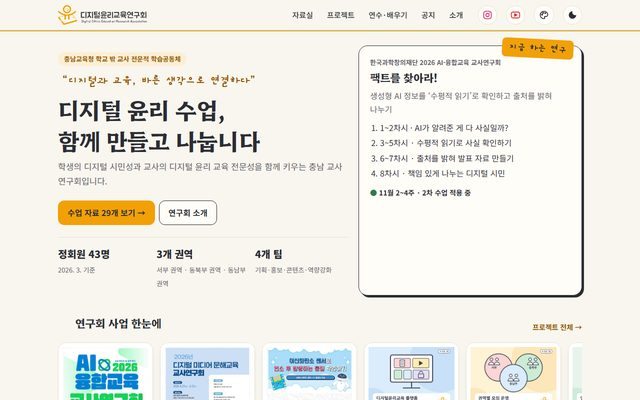
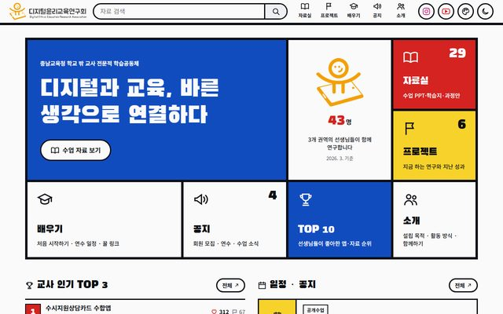
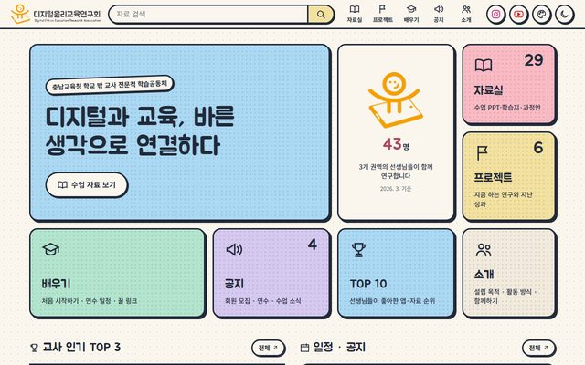
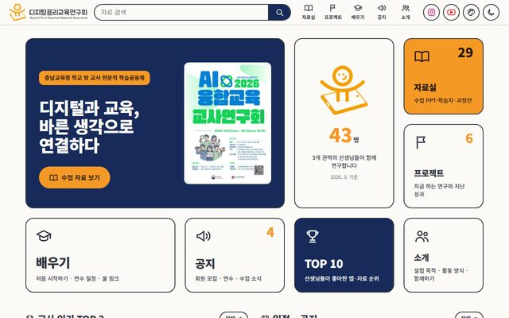
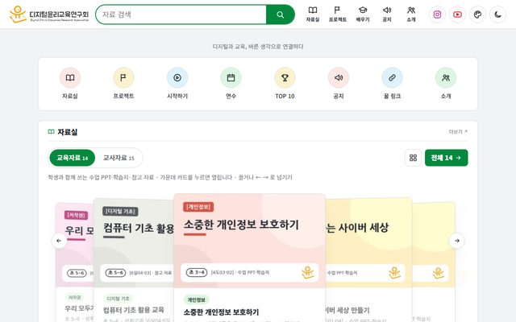
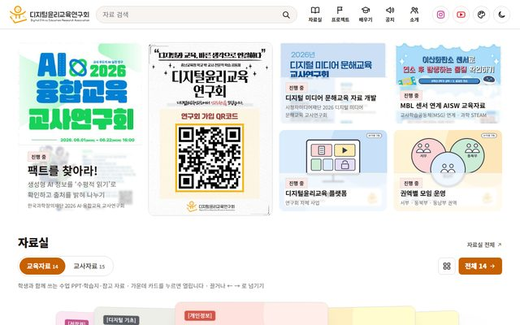

디지털윤리교육연구회 · 홈페이지 보고1 / 7

선생님 누구나
찾아서 바로 쓰는
연구회 홈페이지
수업 자료, 회원이 만든 웹앱, 프로젝트·연수·공지를 한곳에 모았습니다. 오늘은 장점·구조·메뉴·디자인·비용을 보고, 정할 것을 함께 정합니다.
29수업·교사 자료
13회원이 만든 웹앱
6연구 프로젝트
6디자인 시안
cosan75.github.io/ethics-site2026. 11.
장점2 / 7
돈 들지 않고, 학교에서 열리고,
고치기 쉽습니다
- 운영비 0원GitHub Pages 무료 게시. 따로 빌리는 서버가 없습니다.
- 학교망에서 열림학교망이 막는 일부 배포 서비스 대신 GitHub Pages를 써서 교실에서도 바로 열립니다.
- 한 파일만 고치면 끝자료·공지·일정은 모두 data.js 한 파일에. 올리면 1~2분 뒤 사이트에 반영됩니다.
- 찾기 쉬운 자료실교육자료 14 · 교사자료 15 탭, 흐르는 카드 ↔ 목록 보기, 맨 위 검색창.
- 실제 화면 썸네일회원이 만든 웹앱 13개를 실제 화면 사진으로 보여 주고, 누르면 바로 열립니다.
- 어디서나 같은 화면휴대폰·태블릿·PC 모두 맞춤, 밝은 화면·어두운 화면 둘 다 됩니다.
디지털윤리교육연구회장점
구조3 / 7
내용과 옷을 나눠 두었습니다
data.js내용은 한 곳에자료 29 · 프로젝트 6 · 성과 9 · 연수 · 공지 · 일정 · 링크
app.js공용 화면 엔진메뉴 이동, 검색, 자료 탭·흐르는 카드, 첫 화면을 한 번에 만듭니다
디자인 0~5갈아입는 옷색·글꼴·배치만 다르고 내용과 기능은 같습니다
GitHub올리면 자동 게시저장소에 올리면 GitHub Pages가 알아서 사이트를 바꿉니다
디지털윤리교육연구회구조
메뉴 트리4 / 7
메뉴는 여섯 갈래입니다
- 홈페이지로고를 누르면 언제나 첫 화면으로
- 첫 화면
#/바로가기 타일인기 TOP 3일정·공지지금 하는 연구자료 흐름 카드 - 자료실
#/library교육자료 14교사자료 15카드 ↔ 목록검색 - 프로젝트
#/projects지금 하는 연구 6지난 성과 9 - 배우기
#/learn시작하기 4단계연수 일정교사 인기 TOP 10꿀 링크 6 - 공지
#/notice공지 4모집·연수 소식 - 소개
#/about설립 목적활동 방식운영 조직 4팀함께하기·가입 QR - 회원
2단계로그인·가입 신청내 정보운영진: 가입 승인
- 첫 화면
교육자료 = 수업 PPT·학습지·참고 자료 · 교사자료 = 웹앱 13·과정안 2메뉴
디자인5 / 7
시안 6가지 중
하나를 고릅니다

따뜻한 종이색, 글 중심

빨강·노랑·파랑 원색 격자

파스텔 타일, 부드러운 인상

남색+주황 두 색, 굵은 글씨·포스터

아이콘 바로가기, 자료실이 바로

포스터·표지 사진이 앞에
사이트 오른쪽 위 팔레트 단추로 직접 바꿔 볼 수 있습니다디자인
서버 비용6 / 7
회원 기능을 켜면
월 $25가 듭니다
지금 홈페이지
0원
GitHub Pages
- 자료·공지 보기
- 로그인 없음
Supabase 무료
$0
시험 운영용
- 1주일 안 쓰면 일시 정지
- 백업 없음
- DB 500MB · 회원 5만 명
Supabase Pro · 추천
$25 /월
약 3만 6천 원*
- 정지 없음
- 매일 백업, 7일 보관
- DB 8GB · 파일 100GB · 회원 10만 명
- 서버(Micro)는 포함 크레딧 $10으로
$3001년 기준 약 43만 5천 원*. 정회원 43명은 무료 한도로도 충분합니다. 돈을 내는 이유는 정지되지 않고, 매일 백업되기 때문입니다.
- 추가로 늘 수 있는 것: 프로젝트를 하나 더 만들면 월 $10부터, 서버를 Small로 올리면 월 $15(크레딧 $10 차감), 용량 초과분
- 카드는 해외 결제로 매달 청구 · 연구회 예산 처리 방법 확인 필요
* 1달러 = 1,450원으로 계산, 부가세·해외 결제 수수료 별도. supabase.com/pricing 2026. 11. 10. 기준이며 요금은 바뀔 수 있습니다.
검토사항7 / 7
오늘 함께 정할 것
- 대표 디자인 1개고른 시안을 기본 화면으로 두고, 나머지 시안은 정리합니다.
- 회원 기능(2단계) 시작 여부Supabase(서울) · 운영진 승인제 · 학생 가입 없음 · 이름·소속만 받기. Pro 월 $25(1년 약 43만 원, 6장) 예산과 첫 운영진을 정해야 합니다.
- 검색 노출 시점지금은 검색엔진에 나오지 않게 막아 두었습니다(noindex). 언제 열지 정합니다.
- 자료 저작권·공유 범위수업 PPT·학습지·포스터의 출처 표기와 외부 공개 범위를 자료 만든 선생님께 확인합니다.
- 개인정보화면·썸네일 속 선생님 실명은 최소로(행사 앱 썸네일의 이름은 흐리게 처리함). 사진 사용 동의를 확인합니다.
- 관리 담당과 주소자료·공지를 누가 얼마나 자주 올릴지, 지금 주소를 그대로 쓸지 정합니다.
디지털윤리교육연구회검토사항